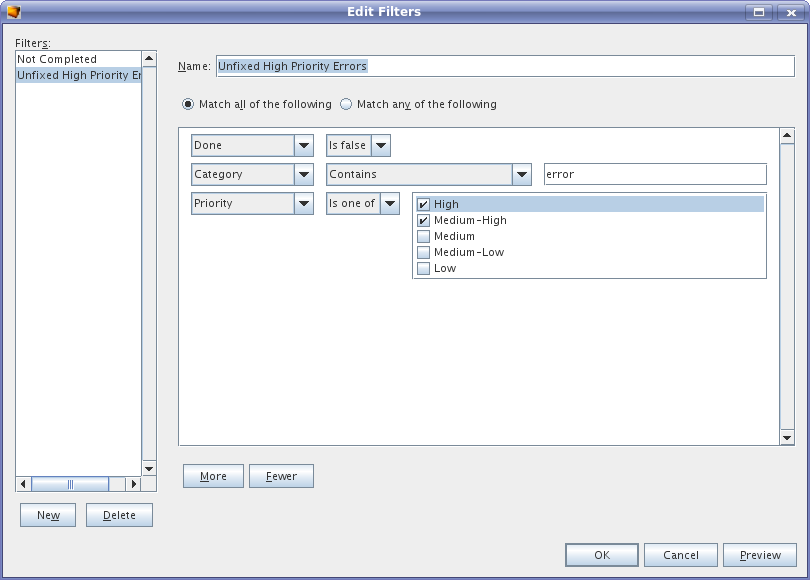
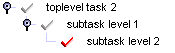

Use the "New" button to create a new filter and "Delete" to
delete
the selected (current) filter. The "Preview" button allows to see the
results without closing the dialog.
To add additional search criteria, click on the "More" button. To remove the last condition from the list, click on the "Fewer" button. By default a task is accepted if it matches any of the conditions. Select the "Match all of the following" checkbox to require all conditions to be met.
If a task has subtasks, and the task itself does not match the criteria but one or more of its subtasks do it will cause the (non-matching) parent task to be included in the tasklist, but with a gray icon. This means you can still see the original structure of the tasklist. Here's how this looks:

Note that clicking on the "Search" icon in the toolbar when a tasklist window is active brings up the filter dialog.
Filters are preserved from session to session.
dev@tasklist.netbeans.org.
Further information at http://tasklist.netbeans.org.